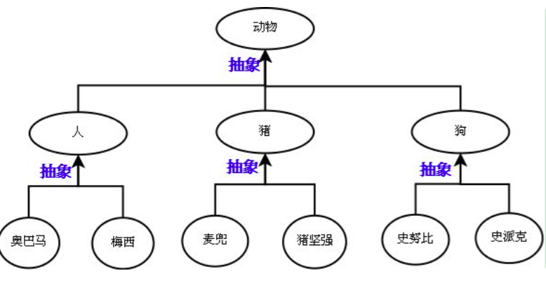
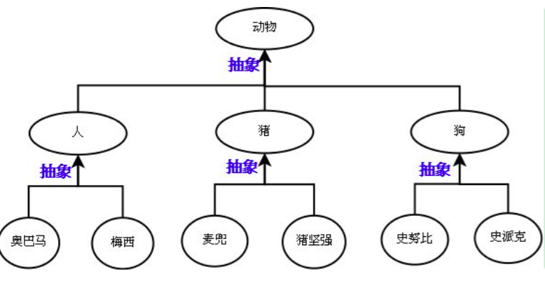

继承
什么是继承
继承是一种创建新类的方式，在 python 中，新建的类可以继承一个或多个父类，父类又可称为基类或超类，新建的类称为派生类或子类
python 中类的继承分为：单继承和多继承
class ParentClass1: #定义父类
pass
class ParentClass2: #定义父类
pass
class SubClass1(ParentClass1): #单继承，基类是ParentClass1，派生类是SubClass
pass
class SubClass2(ParentClass1,ParentClass2): #python支持多继承，用逗号分隔开多个继承的类
pass
查看继承
>>> SubClass1.__bases__ #__base__只查看从左到右继承的第一个子类，__bases__则是查看所有继承的父类
(<class '__main__.ParentClass1'>,)
>>> SubClass2.__bases__
(<class '__main__.ParentClass1'>, <class '__main__.ParentClass2'>)
提示：如果没有指定基类，python 的类会默认继承 object 类，object 是所有 python 类的基类，它提供了一些常见方法（如__str__）的实现。
继承与抽象（先抽象再继承）
抽象即抽取类似或者说比较像的部分。
抽象分成两个层次：
1.将奥巴马和梅西这俩对象比较像的部分抽取成类；
2.将人，猪，狗这三个类比较像的部分抽取成父类。
抽象最主要的作用是划分类别（可以隔离关注点，降低复杂度）
 

继承：是基于抽象的结果，通过编程语言去实现它，肯定是先经历抽象这个过程，才能通过继承的方式去表达出抽象的结构。
抽象只是分析和设计的过程中，一个动作或者说一种技巧，通过抽象可以得到类

继承与重用性
使用继承来解决代码重用的例子
在开发程序的过程中，如果我们定义了一个类 A，然后又想新建立另外一个类 B，但是类 B 的大部分内容与类 A 的相同时
我们不可能从头开始写一个类 B，这就用到了类的继承的概念。
通过继承的方式新建类 B，让 B 继承 A，B 会‘遗传’A 的所有属性(数据属性和函数属性)，实现代码重用
class Animal:
'''
人和狗都是动物，所以创造一个Animal基类
'''
def __init__(self, name, aggressivity, life_value):
self.name = name # 人和狗都有自己的昵称;
self.aggressivity = aggressivity # 人和狗都有自己的攻击力;
self.life_value = life_value # 人和狗都有自己的生命值;
def eat(self):
print('%s is eating'%self.name)
class Dog(Animal):
pass
class Person(Animal):
pass
egg = Person('jason',10,1000)
ha2 = Dog('二愣子',50,1000)
egg.eat()
ha2.eat()
提示：用已经有的类建立一个新的类，这样就重用了已经有的软件中的一部分设置大部分，大大生了编程工作量，这就是常说的软件重用，不仅可以重用自己的类，也可以继承别人的，比如标准库，来定制新的数据类型，这样就是大大缩短了软件开发周期，对大型软件开发来说，意义重大.
派生
当然子类也可以添加自己新的属性或者在自己这里重新定义这些属性（不会影响到父类），需要注意的是，一旦重新定义了自己的属性且与父类重名，那么调用新增的属性时，就以自己为准了。
class Animal:
'''
人和狗都是动物，所以创造一个Animal基类
'''
def __init__(self, name, aggressivity, life_value):
self.name = name # 人和狗都有自己的昵称;
self.aggressivity = aggressivity # 人和狗都有自己的攻击力;
self.life_value = life_value # 人和狗都有自己的生命值;
def eat(self):
print('%s is eating'%self.name)
class Dog(Animal):
'''
狗类，继承Animal类
'''
def bite(self, people):
'''
派生：狗有咬人的技能
:param people:
'''
people.life_value -= self.aggressivity
class Person(Animal):
'''
人类，继承Animal
'''
def attack(self, dog):
'''
派生：人有攻击的技能
:param dog:
'''
dog.life_value -= self.aggressivity
egg = Person('jason',10,1000)
ha2 = Dog('二愣子',50,1000)
print(ha2.life_value)
print(egg.attack(ha2))
print(ha2.life_value)
注意：像 ha2.life_value 之类的属性引用，会先从实例中找 life_value 然后去类中找，然后再去父类中找...直到最顶级的父类。
在子类中，新建的重名的函数属性，在编辑函数内功能的时候，有可能需要重用父类中重名的那个函数功能，应该是用调用普通函数的方式，即：类名.func()，此时就与调用普通函数无异了，因此即便是 self 参数也要为其传值.
在 python3 中，子类执行父类的方法也可以直接用 super 方法.
class A:
def hahaha(self):
print('A')
class B(A):
def hahaha(self):
super().hahaha()
#super(B,self).hahaha()
#A.hahaha(self)
print('B')
a = A()
b = B()
b.hahaha()
super(B,b).hahaha()
class Animal:
'''
人和狗都是动物，所以创造一个Animal基类
'''
def __init__(self, name, aggressivity, life_value):
self.name = name # 人和狗都有自己的昵称;
self.aggressivity = aggressivity # 人和狗都有自己的攻击力;
self.life_value = life_value # 人和狗都有自己的生命值;
def eat(self):
print('%s is eating'%self.name)
class Dog(Animal):
'''
狗类，继承Animal类
'''
def __init__(self,name,breed,aggressivity,life_value):
super().__init__(name, aggressivity, life_value) #执行父类Animal的init方法
self.breed = breed #派生出了新的属性
def bite(self, people):
'''
派生出了新的技能：狗有咬人的技能
:param people:
'''
people.life_value -= self.aggressivity
def eat(self):
# Animal.eat(self)
#super().eat()
print('from Dog')
class Person(Animal):
'''
人类，继承Animal
'''
def __init__(self,name,aggressivity, life_value,money):
#Animal.__init__(self, name, aggressivity, life_value)
#super(Person, self).__init__(name, aggressivity, life_value)
super().__init__(name,aggressivity, life_value) #执行父类的init方法
self.money = money #派生出了新的属性
def attack(self, dog):
'''
派生出了新的技能：人有攻击的技能
:param dog:
'''
dog.life_value -= self.aggressivity
def eat(self):
#super().eat()
Animal.eat(self)
print('from Person')
egg = Person('jason',10,1000,600)
ha2 = Dog('二愣子','哈士奇',10,1000)
print(egg.name)
print(ha2.name)
egg.eat()
通过继承建立了派生类与基类之间的关系，它是一种'是'的关系，比如白马是马，人是动物。
当类之间有很多相同的功能，提取这些共同的功能做成基类，用继承比较好，比如教授是老师
>>> class Teacher:
... def __init__(self,name,gender):
... self.name=name
... self.gender=gender
... def teach(self):
... print('teaching')
...
>>>
>>> class Professor(Teacher):
... pass
...
>>> p1=Professor('jason','male')
>>> p1.teach()
teaching
抽象类与接口类
接口类
继承有两种用途：
一：继承基类的方法，并且做出自己的改变或者扩展（代码重用）
二：声明某个子类兼容于某基类，定义一个接口类 Interface，接口类中定义了一些接口名（就是函数名）且并未实现接口的功能，子类继承接口类，并且实现接口中的功能
class Alipay:
'''
支付宝支付
'''
def pay(self,money):
print('支付宝支付了%s元'%money)
class Applepay:
'''
apple pay支付
'''
def pay(self,money):
print('apple pay支付了%s元'%money)
def pay(payment,money):
'''
支付函数，总体负责支付
对应支付的对象和要支付的金额
'''
payment.pay(money)
p = Alipay()
pay(p,200)
开发中容易出现的问题
class Alipay:
'''
支付宝支付
'''
def pay(self,money):
print('支付宝支付了%s元'%money)
class Applepay:
'''
apple pay支付
'''
def pay(self,money):
print('apple pay支付了%s元'%money)
class Wechatpay:
def fuqian(self,money):
'''
实现了pay的功能，但是名字不一样
'''
print('微信支付了%s元'%money)
def pay(payment,money):
'''
支付函数，总体负责支付
对应支付的对象和要支付的金额
'''
payment.pay(money)
p = Wechatpay()
pay(p,200) #执行会报错
接口初成：手动报异常：NotImplementedError 来解决开发中遇到的问题
class Payment:
def pay(self):
raise NotImplementedError
class Wechatpay(Payment):
def fuqian(self,money):
print('微信支付了%s元'%money)
p = Wechatpay() #这里不报错
pay(p,200) #这里报错了
借用 abc 模块来实现接口
from abc import ABCMeta,abstractmethod
class Payment(metaclass=ABCMeta):
@abstractmethod
def pay(self,money):
pass
class Wechatpay(Payment):
def fuqian(self,money):
print('微信支付了%s元'%money)
p = Wechatpay() #不调就报错了
实践中，继承的第一种含义意义并不很大，甚至常常是有害的。因为它使得子类与基类出现强耦合。
继承的第二种含义非常重要。它又叫“接口继承”。
接口继承实质上是要求“做出一个良好的抽象，这个抽象规定了一个兼容接口，使得外部调用者无需关心具体细节，可一视同仁的处理实现了特定接口的所有对象”——这在程序设计上，叫做归一化。
归一化使得高层的外部使用者可以不加区分的处理所有接口兼容的对象集合——就好象 linux 的泛文件概念一样，所有东西都可以当文件处理，不必关心它是内存、磁盘、网络还是屏幕（当然，对底层设计者，当然也可以区分出“字符设备”和“块设备”，然后做出针对性的设计：细致到什么程度，视需求而定）。
在 python 中根本就没有一个叫做 interface 的关键字，上面的代码只是看起来像接口，其实并没有起到接口的作用，子类完全可以不用去实现接口 ，如果非要去模仿接口的概念，可以借助第三方模块：
http://pypi.python.org/pypi/zope.interface
twisted 的 twisted\internet\interface.py 里使用 zope.interface
文档 https://zopeinterface.readthedocs.io/en/latest/
设计模式：https://github.com/faif/python-patterns
接口提取了一群类共同的函数，可以把接口当做一个函数的集合。
然后让子类去实现接口中的函数。
这么做的意义在于归一化，什么叫归一化，就是只要是基于同一个接口实现的类，那么所有的这些类产生的对象在使用时，从用法上来说都一样。
归一化，让使用者无需关心对象的类是什么，只需要的知道这些对象都具备某些功能就可以了，这极大地降低了使用者的使用难度。
比如：我们定义一个动物接口，接口里定义了有跑、吃、呼吸等接口函数，这样老鼠的类去实现了该接口，松鼠的类也去实现了该接口，由二者分别产生一只老鼠和一只松鼠送到你面前，即便是你分别不到底哪只是什么鼠你肯定知道他俩都会跑，都会吃，都能呼吸。
再比如：我们有一个汽车接口，里面定义了汽车所有的功能，然后由本田汽车的类，奥迪汽车的类，大众汽车的类，他们都实现了汽车接口，这样就好办了，大家只需要学会了怎么开汽车，那么无论是本田，还是奥迪，还是大众我们都会开了，开的时候根本无需关心我开的是哪一类车，操作手法（函数调用）都一样
抽象类
什么是抽象类
与 java 一样，python 也有抽象类的概念但是同样需要借助模块实现，抽象类是一个特殊的类，它的特殊之处在于只能被继承，不能被实例化
为什么要有抽象类
如果说类是从一堆对象中抽取相同的内容而来的，那么抽象类就是从一堆类中抽取相同的内容而来的，内容包括数据属性和函数属性。
比如我们有香蕉的类，有苹果的类，有桃子的类，从这些类抽取相同的内容就是水果这个抽象的类，你吃水果时，要么是吃一个具体的香蕉，要么是吃一个具体的桃子。。。。。。你永远无法吃到一个叫做水果的东西。
从设计角度去看，如果类是从现实对象抽象而来的，那么抽象类就是基于类抽象而来的。
从实现角度来看，抽象类与普通类的不同之处在于：抽象类中有抽象方法，该类不能被实例化，只能被继承，且子类必须实现抽象方法。这一点与接口有点类似，但其实是不同的，即将揭晓答案
在 python 中实现抽象类
View Code
抽象类与接口类
抽象类的本质还是类，指的是一组类的相似性，包括数据属性（如 all_type）和函数属性（如 read、write），而接口只强调函数属性的相似性。
抽象类是一个介于类和接口直接的一个概念，同时具备类和接口的部分特性，可以用来实现归一化设计
在 python 中，并没有接口类这种东西，即便不通过专门的模块定义接口，我们也应该有一些基本的概念。
1.多继承问题
在继承抽象类的过程中，我们应该尽量避免多继承；
而在继承接口的时候，我们反而鼓励你来多继承接口
2.方法的实现
在抽象类中，我们可以对一些抽象方法做出基础实现；
而在接口类中，任何方法都只是一种规范，具体的功能需要子类实现
钻石继承
继承顺序

class A(object):
def test(self):
print('from A')
class B(A):
def test(self):
print('from B')
class C(A):
def test(self):
print('from C')
class D(B):
def test(self):
print('from D')
class E(C):
def test(self):
print('from E')
class F(D,E):
# def test(self):
# print('from F')
pass
f1=F()
f1.test()
print(F.__mro__) #只有新式才有这个属性可以查看线性列表，经典类没有这个属性
#新式类继承顺序:F->D->B->E->C->A
#经典类继承顺序:F->D->B->A->E->C
#python3中统一都是新式类
#pyhon2中才分新式类与经典类
继承原理
python 到底是如何实现继承的，对于你定义的每一个类，python 会计算出一个方法解析顺序(MRO)列表，这个 MRO 列表就是一个简单的所有基类的线性顺序列表，例如
>>> F.mro() #等同于F.__mro__
[<class '__main__.F'>, <class '__main__.D'>, <class '__main__.B'>, <class '__main__.E'>, <class '__main__.C'>, <class '__main__.A'>, <class 'object'>]
为了实现继承,python 会在 MRO 列表上从左到右开始查找基类,直到找到第一个匹配这个属性的类为止。
而这个 MRO 列表的构造是通过一个 C3 线性化算法来实现的。我们不去深究这个算法的数学原理,它实际上就是合并所有父类的 MRO 列表并遵循如下三条准则:
1.子类会先于父类被检查
2.多个父类会根据它们在列表中的顺序被检查
3.如果对下一个类存在两个合法的选择,选择第一个父类
继承小结
继承的作用
几个名词
抽象类与接口类
1.多继承问题
在继承抽象类的过程中，我们应该尽量避免多继承；
而在继承接口的时候，我们反而鼓励你来多继承接口
2.方法的实现
在抽象类中，我们可以对一些抽象方法做出基础实现；
而在接口类中，任何方法都只是一种规范，具体的功能需要子类实现
钻石继承
多态
多态
多态指的是一类事物有多种形态
动物有多种形态：人，狗，猪
import abc
class Animal(metaclass=abc.ABCMeta): #同一类事物:动物
@abc.abstractmethod
def talk(self):
pass
class People(Animal): #动物的形态之一:人
def talk(self):
print('say hello')
class Dog(Animal): #动物的形态之二:狗
def talk(self):
print('say wangwang')
class Pig(Animal): #动物的形态之三:猪
def talk(self):
print('say aoao')
文件有多种形态：文本文件，可执行文件
import abc
class File(metaclass=abc.ABCMeta): #同一类事物:文件
@abc.abstractmethod
def click(self):
pass
class Text(File): #文件的形态之一:文本文件
def click(self):
print('open file')
class ExeFile(File): #文件的形态之二:可执行文件
def click(self):
print('execute file')
多态性
一 什么是多态动态绑定（在继承的背景下使用时，有时也称为多态性）
多态性是指在不考虑实例类型的情况下使用实例
在面向对象方法中一般是这样表述多态性：
向不同的对象发送同一条消息（！！！obj.func():是调用了obj的方法func，又称为向obj发送了一条消息func），不同的对象在接收时会产生不同的行为（即方法）。
也就是说，每个对象可以用自己的方式去响应共同的消息。所谓消息，就是调用函数，不同的行为就是指不同的实现，即执行不同的函数。
比如：老师.下课铃响了（），学生.下课铃响了()，老师执行的是下班操作，学生执行的是放学操作，虽然二者消息一样，但是执行的效果不同
多态性
peo=People()
dog=Dog()
pig=Pig()
#peo、dog、pig都是动物,只要是动物肯定有talk方法
#于是我们可以不用考虑它们三者的具体是什么类型,而直接使用
peo.talk()
dog.talk()
pig.talk()
#更进一步,我们可以定义一个统一的接口来使用
def func(obj):
obj.talk()
鸭子类型
逗比时刻：
Python 崇尚鸭子类型，即‘如果看起来像、叫声像而且走起路来像鸭子，那么它就是鸭子’
python 程序员通常根据这种行为来编写程序。例如，如果想编写现有对象的自定义版本，可以继承该对象
也可以创建一个外观和行为像，但与它无任何关系的全新对象，后者通常用于保存程序组件的松耦合度。
例 1：利用标准库中定义的各种‘与文件类似’的对象，尽管这些对象的工作方式像文件，但他们没有继承内置文件对象的方法
例 2：序列类型有多种形态：字符串，列表，元组，但他们直接没有直接的继承关系
#二者都像鸭子,二者看起来都像文件,因而就可以当文件一样去用
class TxtFile:
def read(self):
pass
def write(self):
pass
class DiskFile:
def read(self):
pass
def write(self):
pass
封装
【封装】
隐藏对象的属性和实现细节，仅对外提供公共访问方式。
【好处】
\1. 将变化隔离；
\2. 便于使用；
\3. 提高复用性；
\4. 提高安全性；
【封装原则】
\1. 将不需要对外提供的内容都隐藏起来；
\2. 把属性都隐藏，提供公共方法对其访问。
私有变量和私有方法
在 python 中用双下划线开头的方式将属性隐藏起来（设置成私有的）
私有变量
#其实这仅仅这是一种变形操作
#类中所有双下划线开头的名称如__x都会自动变形成：_类名__x的形式：
class A:
__N=0 #类的数据属性就应该是共享的,但是语法上是可以把类的数据属性设置成私有的如__N,会变形为_A__N
def __init__(self):
self.__X=10 #变形为self._A__X
def __foo(self): #变形为_A__foo
print('from A')
def bar(self):
self.__foo() #只有在类内部才可以通过__foo的形式访问到.
#A._A__N是可以访问到的，即这种操作并不是严格意义上的限制外部访问，仅仅只是一种语法意义上的变形
这种自动变形的特点：
1.类中定义的 __x 只能在内部使用，如 self.__x， 引用的就是变形的结果 。
*2.这种变形其实正是针对外部的变形 *，在外部是无法通过__x 这个名字访问到的。****
3.在子类定义的__x 不会覆盖在*父类定义的__x，因为子类中变形成了：_子类名__x,而父类中变形成了：_父类名__x，即双下滑线开头的属性在继承给子类时，子类是无法覆盖的。*
这种变形需要注意的问题是：
1.这种机制也并没有真正意义上限制我们从外部直接访问属性，知道了类名和属性名就可以拼出名字：_类名__属性，然后就可以访问了，如 a._A__N
2.变形的过程只在类的内部生效,在定义后的赋值操作，不会变形

私有方法
3.在继承中，父类如果不想让子类覆盖自己的方法，可以将方法定义为私有的
#正常情况
>>> class A:
... def fa(self):
... print('from A')
... def test(self):
... self.fa()
...
>>> class B(A):
... def fa(self):
... print('from B')
...
>>> b=B()
>>> b.test()
from B
#把fa定义成私有的，即__fa
>>> class A:
... def __fa(self): #在定义时就变形为_A__fa
... print('from A')
... def test(self):
... self.__fa() #只会与自己所在的类为准,即调用_A__fa
...
>>> class B(A):
... def __fa(self):
... print('from B')
...
>>> b=B()
>>> b.test()
from A
封装与扩展性
封装在于明确区分内外，使得类实现者可以修改封装内的东西而不影响外部调用者的代码；而外部使用用者只知道一个接口(函数)，只要接口（函数）名、参数不变，使用者的代码永远无需改变。这就提供一个良好的合作基础——或者说，只要接口这个基础约定不变，则代码改变不足为虑。
#类的设计者
class Room:
def __init__(self,name,owner,width,length,high):
self.name=name
self.owner=owner
self.__width=width
self.__length=length
self.__high=high
def tell_area(self): #对外提供的接口，隐藏了内部的实现细节，此时我们想求的是面积
return self.__width * self.__length
#使用者
>>> r1=Room('卧室','jason',20,20,20)
>>> r1.tell_area() #使用者调用接口tell_area
#类的设计者，轻松的扩展了功能，而类的使用者完全不需要改变自己的代码
class Room:
def __init__(self,name,owner,width,length,high):
self.name=name
self.owner=owner
self.__width=width
self.__length=length
self.__high=high
def tell_area(self): #对外提供的接口，隐藏内部实现，此时我们想求的是体积,内部逻辑变了,只需求修该下列一行就可以很简答的实现,而且外部调用感知不到,仍然使用该方法，但是功能已经变了
return self.__width * self.__length * self.__high
#对于仍然在使用tell_area接口的人来说，根本无需改动自己的代码，就可以用上新功能
>>> r1.tell_area()
property 属性
什么是特性 property
property 是一种特殊的属性，访问它时会执行一段功能（函数）然后返回值
例一：BMI指数（bmi是计算而来的，但很明显它听起来像是一个属性而非方法，如果我们将其做成一个属性，更便于理解）
成人的BMI数值：
过轻：低于18.5
正常：18.5-23.9
过重：24-27
肥胖：28-32
非常肥胖, 高于32
体质指数（BMI）=体重（kg）÷身高^2（m）
EX：70kg÷（1.75×1.75）=22.86
class People:
def __init__(self,name,weight,height):
self.name=name
self.weight=weight
self.height=height
@property
def bmi(self):
return self.weight / (self.height**2)
p1=People('egon',75,1.85)
print(p1.bmi)
import math
class Circle:
def __init__(self,radius): #圆的半径radius
self.radius=radius
@property
def area(self):
return math.pi * self.radius**2 #计算面积
@property
def perimeter(self):
return 2*math.pi*self.radius #计算周长
c=Circle(10)
print(c.radius)
print(c.area) #可以向访问数据属性一样去访问area,会触发一个函数的执行,动态计算出一个值
print(c.perimeter) #同上
'''
输出结果:
314.1592653589793
62.83185307179586
'''
为什么要用 property
将一个类的函数定义成特性以后，对象再去使用的时候 obj.name,根本无法察觉自己的 name 是执行了一个函数然后计算出来的，这种特性的使用方式遵循了统一访问的原则
除此之外，看下
ps：面向对象的封装有三种方式:
【public】
这种其实就是不封装,是对外公开的
【protected】
这种封装方式对外不公开,但对朋友(friend)或者子类(形象的说法是“儿子”,但我不知道为什么大家 不说“女儿”,就像“parent”本来是“父母”的意思,但中文都是叫“父类”)公开
【private】
这种封装对谁都不公开
python 并没有在语法上把它们三个内建到自己的 class 机制中，在 C++ 里一般会将所有的所有的数据都设置为私有的，然后提供 set 和 get 方法（接口）去设置和获取，在 python 中通过 property 方法可以实现
class Foo:
def __init__(self,val):
self.__NAME=val #将所有的数据属性都隐藏起来
@property
def name(self):
return self.__NAME #obj.name访问的是self.__NAME(这也是真实值的存放位置)
@name.setter
def name(self,value):
if not isinstance(value,str): #在设定值之前进行类型检查
raise TypeError('%s must be str' %value)
self.__NAME=value #通过类型检查后,将值value存放到真实的位置self.__NAME
@name.deleter
def name(self):
raise TypeError('Can not delete')
f=Foo('jason')
print(f.name)
# f.name=10 #抛出异常'TypeError: 10 must be str'
del f.name #抛出异常'TypeError: Can not delete'
一个静态属性 property 本质就是实现了 get，set，delete 三种方法
class Foo:
@property
def AAA(self):
print('get的时候运行我啊')
@AAA.setter
def AAA(self,value):
print('set的时候运行我啊')
@AAA.deleter
def AAA(self):
print('delete的时候运行我啊')
#只有在属性AAA定义property后才能定义AAA.setter,AAA.deleter
f1=Foo()
f1.AAA
f1.AAA='aaa'
del f1.AAA
class Foo:
def get_AAA(self):
print('get的时候运行我啊')
def set_AAA(self,value):
print('set的时候运行我啊')
def delete_AAA(self):
print('delete的时候运行我啊')
AAA=property(get_AAA,set_AAA,delete_AAA) #内置property三个参数与get,set,delete一一对应
f1=Foo()
f1.AAA
f1.AAA='aaa'
del f1.AAA
怎么用？
class Goods:
def __init__(self):
# 原价
self.original_price = 100
# 折扣
self.discount = 0.8
@property
def price(self):
# 实际价格 = 原价 * 折扣
new_price = self.original_price * self.discount
return new_price
@price.setter
def price(self, value):
self.original_price = value
@price.deleter
def price(self):
del self.original_price
obj = Goods()
obj.price # 获取商品价格
obj.price = 200 # 修改商品原价
print(obj.price)
del obj.price # 删除商品原价
classmethod
class Classmethod_Demo():
role = 'dog'
@classmethod
def func(cls):
print(cls.role)
Classmethod_Demo.func()
staticmethod
class Staticmethod_Demo():
role = 'dog'
@staticmethod
def func():
print("当普通方法用")
Staticmethod_Demo.func()
class Foo:
def func(self):
print('in father')
class Son(Foo):
def func(self):
print('in son')
s = Son()
s.func()
# 请说出上面一段代码的输出并解释原因？
class A:
__role = 'CHINA'
@classmethod
def show_role(cls):
print(cls.__role)
@staticmethod
def get_role():
return A.__role
@property
def role(self):
return self.__role
a = A()
print(a.role)
print(a.get_role())
a.show_role()
# __role在类中有哪些身份？
# 以上代码分别输出哪些内容？
# 这三个装饰器分别起了什么作用？有哪些区别？
面向对象的更多说明
面向对象的软件开发
很多人在学完了 python 的 class 机制之后，遇到一个生产中的问题，还是会懵逼，这其实太正常了，因为任何程序的开发都是先设计后编程，python 的 class 机制只不过是一种编程方式，如果你硬要拿着 class 去和你的问题死磕，变得更加懵逼都是分分钟的事，在以前，软件的开发相对简单，从任务的分析到编写程序，再到程序的调试，可以由一个人或一个小组去完成。但是随着软件规模的迅速增大，软件任意面临的问题十分复杂，需要考虑的因素太多，在一个软件中所产生的错误和隐藏的错误、未知的错误可能达到惊人的程度，这也不是在设计阶段就完全解决的。
所以软件的开发其实一整套规范，我们所学的只是其中的一小部分，一个完整的开发过程，需要明确每个阶段的任务，在保证一个阶段正确的前提下再进行下一个阶段的工作，称之为软件工程
面向对象的软件工程包括下面几个部：
1.面向对象分析（object oriented analysis ，OOA）
软件工程中的系统分析阶段，要求分析员和用户结合在一起，对用户的需求做出精确的分析和明确的表述，从大的方面解析软件系统应该做什么，而不是怎么去做。面向对象的分析要按照面向对象的概念和方法，在对任务的分析中，从客观存在的事物和事物之间的关系，贵南出有关的对象（对象的‘特征’和‘技能’）以及对象之间的联系，并将具有相同属性和行为的对象用一个类 class 来标识。
建立一个能反映这是工作情况的需求模型，此时的模型是粗略的。
2 面向对象设计（object oriented design，OOD）
根据面向对象分析阶段形成的需求模型，对每一部分分别进行具体的设计。
首先是类的设计，类的设计可能包含多个层次（利用继承与派生机制）。然后以这些类为基础提出程序设计的思路和方法，包括对算法的设计。
在设计阶段并不牵涉任何一门具体的计算机语言，而是用一种更通用的描述工具（如伪代码或流程图）来描述
3 面向对象编程（object oriented programming，OOP）
根据面向对象设计的结果，选择一种计算机语言把它写成程序，可以是 python
4 面向对象测试（object oriented test，OOT）
在写好程序后交给用户使用前，必须对程序进行严格的测试，测试的目的是发现程序中的错误并修正它。
面向对的测试是用面向对象的方法进行测试，以类作为测试的基本单元。
5 面向对象维护（object oriendted soft maintenance，OOSM）
正如对任何产品都需要进行售后服务和维护一样，软件在使用时也会出现一些问题，或者软件商想改进软件的性能，这就需要修改程序。
由于使用了面向对象的方法开发程序，使用程序的维护比较容易。
因为对象的封装性，修改一个对象对其他的对象影响很小，利用面向对象的方法维护程序，大大提高了软件维护的效率，可扩展性高。
在面向对象方法中，最早发展的肯定是面向对象编程(OOP),那时 OOA 和 OOD 都还没有发展起来，因此程序设计者为了写出面向对象的程序，还必须深入到分析和设计领域，尤其是设计领域，那时的 OOP 实际上包含了现在的 OOD 和 OOP 两个阶段，这对程序设计者要求比较高，许多人感到很难掌握。
现在设计一个大的软件，是严格按照面向对象软件工程的 5 个阶段进行的，这个 5 个阶段的工作不是由一个人从头到尾完成的，而是由不同的人分别完成，这样 OOP 阶段的任务就比较简单了。程序编写者只需要根据 OOd 提出的思路，用面向对象语言编写出程序既可。
在一个大型软件开发过程中，OOP 只是很小的一个部分。
对于全栈开发的你来说，这五个阶段都有了，对于简单的问题，不必严格按照这个 5 个阶段进行，往往由程序设计者按照面向对象的方法进行程序设计，包括类的设计和程序的设计
几个概念的说明
1.面向对象的程序设计看起来高大上，所以我在编程时就应该保证通篇 class，这样写出的程序一定是好的程序（面向对象只适合那些可扩展性要求比较高的场景）
2.很多人喜欢说面向对象三大特性（这是从哪传出来的，封装，多态，继承？漏洞太多太多，好吧暂且称为三大特性），那么我在基于面向对象编程时，我一定要让我定义的类中完整的包含这三种特性，这样写肯定是好的程序
好家伙，我说降龙十八掌有十八掌，那么你每次跟人干仗都要从第一掌打到第 18 掌这才显得你会了是么：面对敌人，你打到第三掌对方就已经倒下了，你说，不行，你给老子起来，老子还没有 show 完...
3.类有类属性，实例有实例属性，所以我们在定义 class 时一定要定义出那么几个类属性，想不到怎么办，那就使劲的想，定义的越多越牛逼
这就犯了一个严重的错误，程序越早面向对象，死的越早，为啥面向对象，因为我们要将数据与功能结合到一起，程序整体的结构都没有出来，或者说需要考虑的问题你都没有搞清楚个八九不离十，你就开始面向对象了，这就导致了，你在那里干想，自以为想通了，定义了一堆属性，结果后来又都用不到，或者想不通到底应该定义啥，那就一直想吧，想着想着就疯了。
你见过哪家公司要开发一个软件，上来就开始写，肯定是频繁的开会讨论计划，请看第八节。
面向对象常用术语
抽象/实现
抽象指对现实世界问题和实体的本质表现,行为和特征建模,建立一个相关的子集,可以用于 绘程序结构,从而实现这种模型。抽象不仅包括这种模型的数据属性,还定义了这些数据的接口。
对某种抽象的实现就是对此数据及与之相关接口的现实化(realization)。现实化这个过程对于客户 程序应当是透明而且无关的。
封装/接口
封装描述了对数据/信息进行隐藏的观念,它对数据属性提供接口和访问函数。通过任何客户端直接对数据的访问,无视接口,与封装性都是背道而驰的,除非程序员允许这些操作。作为实现的 一部分,客户端根本就不需要知道在封装之后,数据属性是如何组织的。在 Python 中,所有的类属性都是公开的,但名字可能被“混淆”了,以阻止未经授权的访问,但仅此而已,再没有其他预防措施了。这就需要在设计时,对数据提供相应的接口,以免客户程序通过不规范的操作来存取封装的数据属性。
注意：封装绝不是等于“把不想让别人看到、以后可能修改的东西用 private 隐藏起来”
真正的封装是，经过深入的思考，做出良好的抽象，给出“完整且最小”的接口，并使得内部细节可以对外透明
（注意：对外透明的意思是，外部调用者可以顺利的得到自己想要的任何功能，完全意识不到内部细节的存在）
合成
合成扩充了对类的 述,使得多个不同的类合成为一个大的类,来解决现实问题。合成 述了 一个异常复杂的系统,比如一个类由其它类组成,更小的组件也可能是其它的类,数据属性及行为, 所有这些合在一起,彼此是“有一个”的关系。
派生/继承/继承结构
派生描述了子类衍生出新的特性,新类保留已存类类型中所有需要的数据和行为,但允许修改或者其它的自定义操作,都不会修改原类的定义。
继承描述了子类属性从祖先类继承这样一种方式
继承结构表示多“代”派生,可以述成一个“族谱”,连续的子类,与祖先类都有关系。
泛化/特化
基于继承
泛化表示所有子类与其父类及祖先类有一样的特点。
特化描述所有子类的自定义,也就是,什么属性让它与其祖先类不同。
多态与多态性
多态指的是同一种事物的多种状态：水这种事物有多种不同的状态：冰，水蒸气
多态性的概念指出了对象如何通过他们共同的属性和动作来操作及访问,而不需考虑他们具体的类。
冰，水蒸气，都继承于水，它们都有一个同名的方法就是变成云，但是冰.变云(),与水蒸气.变云()是截然不同的过程，虽然调用的方法都一样
自省/反射
自省也称作反射，这个性质展示了某对象是如何在运行期取得自身信息的。如果传一个对象给你,你可以查出它有什么能力,这是一项强大的特性。如果 Python 不支持某种形式的自省功能,dir 和 type 内建函数,将很难正常工作。还有那些特殊属性,像__dict__,name__及__doc
创建日期: 2022-04-01